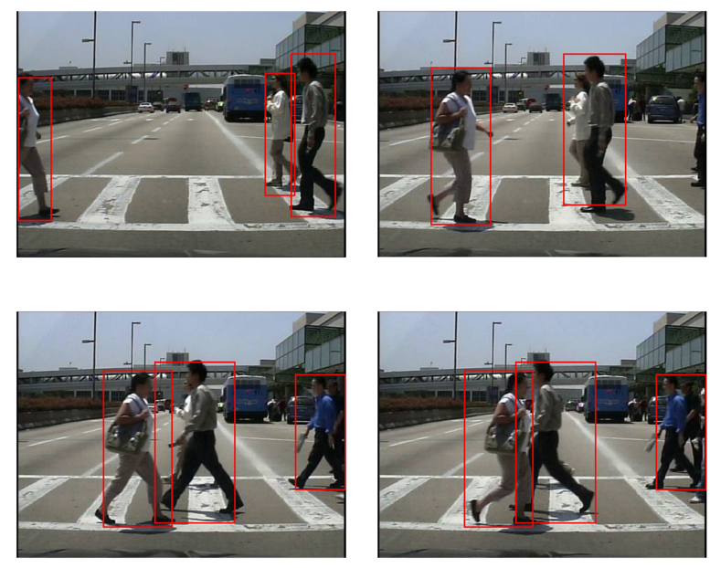

Faster-RCNN for Pedestrian Detection in Videos

Abstract
Train and Employ Faster-RCNN framework to perform pedestrain detection in videos.
Publication
Graduation Project for Undergraduates at Chongqing University
Method
Re-train Faster-RCNN on VOC 2007 and VOC 2012, and also Caltech pedestrian dataset to perform pedestrian detection.
Apply the model on videos to generate pedestrian bounding-boxes frame-by-frame, with some bounding boxes smoothing techniques.
Results
When fed with a video where pedestrians appear during specific frames, the network will process the video and output a new video with pedestrians marked by the bouding boxes.
